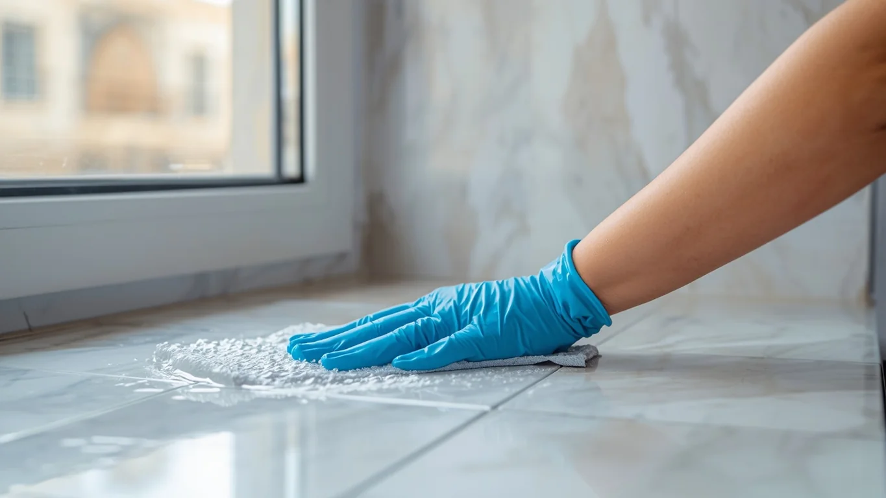
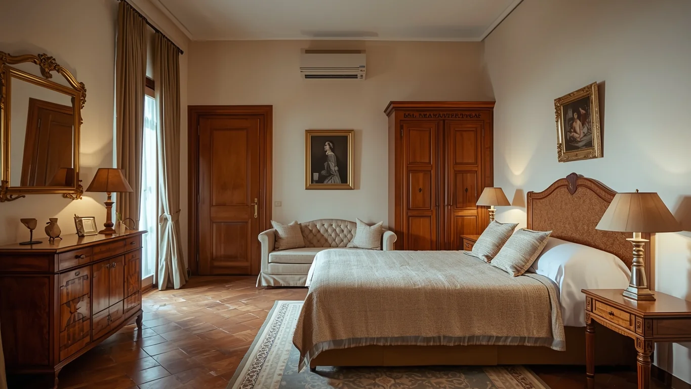
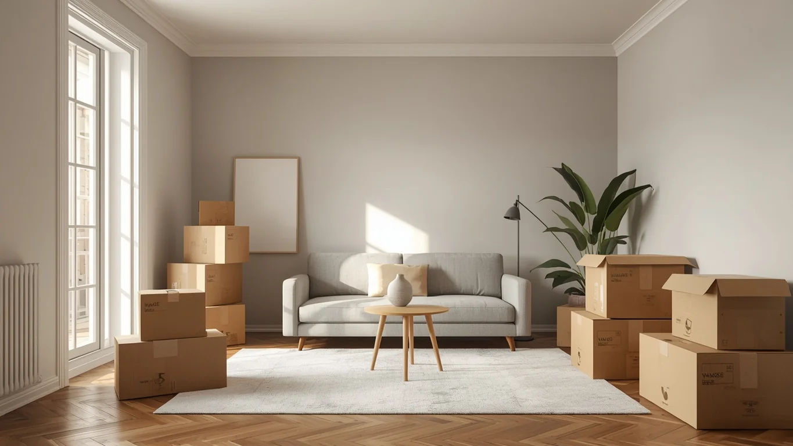

Hay una pregunta que se repite constantemente cuando alguien hereda un piso, necesita preparar una vivienda para vender o acaba de recuperar un inmueble después de años: ¿qué necesito exactamente?
La respuesta depende de qué estado tiene el piso y qué objetivo tiene el propietario. El problema es que vaciado, limpieza profunda y reforma son tres servicios completamente distintos que a menudo se confunden —o se contratan en el orden equivocado— con el consiguiente gasto innecesario.
Esta guía explica con precisión qué hace cada servicio, qué no hace, cuánto cuesta orientativamente y cuándo tiene sentido contratarlos solos o en combinación.

Qué es cada servicio: definición precisa y sin ambigüedad
Vaciado de pisos
Retirada completa de todos los muebles, electrodomésticos, enseres y objetos del interior de la vivienda. El resultado es un piso completamente vacío de contenido.
- Desmontaje de muebles si es necesario
- Carga, transporte y descarga
- Gestión legal de residuos (ARC)
- Certificado de gestión de residuos
- No incluye limpieza de superficies
- No incluye obras ni reparaciones
Limpieza profunda
Servicio de higiene integral de todas las superficies de la vivienda. Ataca la suciedad acumulada, la grasa incrustada y las zonas de difícil acceso con maquinaria profesional.
- Interior de electrodomésticos
- Desengrase de cocina completo
- Descalcificación de baños y mamparas
- Tratamiento de juntas y mohos
- Desinfección y ozonización si precisa
- No retira muebles ni objetos
Reforma integral
Transformación estructural y de acabados de la vivienda: instalaciones, suelos, paredes, carpintería, cocina o baño. Implica obra, materiales y en muchos casos licencia municipal.
- Demolición y desescombro
- Instalaciones (electricidad, fontanería)
- Alicatado, suelos, pintura
- Carpintería, sanitarios, cocina
- Gestión de licencias si aplica
- No retira muebles ni enseres previos
El vaciado retira objetos. La limpieza actúa sobre superficies. La reforma transforma materiales y estructura. Son tres capas distintas del mismo inmueble. Después de un vaciado, el piso sigue sucio. Después de una limpieza, el piso sigue con los mismos acabados deteriorados. Solo la reforma cambia la naturaleza física del espacio.
Tabla comparativa: qué hace y qué no hace cada servicio
| ¿Incluye…? | Vaciado | Limpieza profunda | Reforma integral |
|---|---|---|---|
| Retirar muebles y enseres | ✓ | ✗ | ✗ |
| Gestión legal de residuos (ARC) | ✓ | ✗ | Parcial (escombros) |
| Certificado de gestión de residuos | ✓ | ✗ | Solo escombros |
| Limpiar superficies visibles | ✗ | ✓ | Limpieza fin de obra |
| Interior electrodomésticos y armarios | ✗ | ✓ | ✗ |
| Desinfección / ozonización | ✗ | ✓ | ✗ |
| Cambiar suelos, azulejos o paredes | ✗ | ✗ | ✓ |
| Reparar instalaciones eléctricas | ✗ | ✗ | ✓ |
| Renovar cocina o baño | ✗ | ✗ | ✓ |
| Requiere licencia municipal | No | No | Según alcance |
| Tiempo de ejecución habitual | 1–2 días | 1 día | Semanas o meses |

Guía de decisión: qué servicio necesita según su situación
La situación real del piso y el objetivo del propietario determinan qué servicio es necesario. Estos son los casos más habituales:
El vaciado libera el espacio. La limpieza lo prepara para fotografías y visitas. La reforma solo tiene sentido si los acabados están muy deteriorados y el precio del barrio lo justifica.
Un piso cerrado acumula polvo, humedad y olores. La limpieza profunda resuelve exactamente ese problema. Si hay suciedad de tabaco persistente, añada ozonización.
Si el piso está vacío pero sucio, la limpieza profunda es suficiente. Si el inquilino dejó objetos, primero gestione su retirada (puede necesitar protocolo legal) y luego limpie.
El orden importa: vaciado primero, luego la reforma, luego la limpieza de obra. Mezclarlos complica la logística y encarece el resultado.
Requiere equipos con EPIs, gestores de residuos con autorización específica y tratamiento desinfectante profesional. No es un vaciado estándar ni una limpieza convencional.
La limpieza profunda cambia radicalmente el aspecto de un piso para las fotografías: cristales, suelos, baño y cocina brillantes. Es la preparación más rentable antes de una sesión fotográfica.
Pintar sobre una superficie sucia da un resultado pobre. La limpieza primero, la pintura después. Si es solo pintura sin derribar tabiques, no necesita licencia de obras.
Las empresas de reformas no están equipadas para retirar muebles ni gestionar residuos de enseres. El vaciado siempre va antes de que lleguen los reformistas.
El orden correcto cuando necesita más de un servicio
Uno de los errores más habituales es no respetar el orden lógico de los servicios. Cada uno prepara el terreno para el siguiente, y hacerlos en orden incorrecto complica el trabajo, aumenta el tiempo y encarece el resultado final.
-
1
Vaciado completo
Antes de cualquier otra intervención, el piso debe estar completamente libre de muebles, enseres y objetos. Ninguna empresa de reformas ni equipo de limpieza puede trabajar con eficiencia con el piso lleno. El vaciado incluye la gestión legal de residuos y el certificado de la ARC.
Servicio: Vaciado -
2
Reforma (si procede)
Con el piso vacío, la empresa de reformas puede trabajar sin obstáculos. Tiene acceso a todas las superficies, puede instalar andamios o maquinaria sin dañar enseres y ejecuta la obra en menos tiempo. Las obras generan polvo y residuos propios (escombros) que el reformista gestiona por separado.
Servicio: Reforma -
3
Limpieza post-obra o limpieza profunda
Después de la reforma, el polvo de escombros penetra en todos los rincones y requiere maquinaria industrial para eliminarlo. Si no hay obra, la limpieza profunda después del vaciado elimina la suciedad acumulada de años. En ambos casos, la limpieza es el último paso antes de las fotografías o la entrega al nuevo ocupante.
Servicio: Limpieza -
4
Fotografía y publicación o entrega
Con el piso vacío y limpio, las fotografías profesionales reflejan al máximo el espacio. Un piso vacío fotografía mejor que uno amueblado porque parece más grande, tiene mejor luz y el comprador o inquilino puede proyectar su propio concepto en el espacio.

Precios reales de cada servicio en Barcelona 2026
Los precios que aparecen a continuación están basados en datos verificados de plataformas del sector (Cronoshare, Habitissimo) y de empresas especializadas en Barcelona. Son rangos orientativos: el precio exacto siempre requiere visita previa.
Vaciado
350€ – 4.500€ según tamaño y contenido- 70 m² / 8 muebles: 350–550€
- 115 m² / 22 muebles: 580–880€
- 155 m² / 28 muebles: 950–1.250€
- Sin ascensor: +20% o más
- Diógenes: 2.500–4.500€+
- Incluye certificado ARC
Limpieza profunda
150€ – 1.700€ según estado y superficie- Piso 90 m² estándar: 150–195€
- Limpieza post-obra 90 m²: 300–390€
- 15–20 €/hora (empresa)
- Abandono total o Diógenes: 400–1.700€
- Ozonización: suplemento 150–350€
Reforma integral
400€ – 1.400€/m² sin IVA, según gama- Básica: 400–600 €/m²
- Media: 600–800 €/m²
- Alta/premium: 800–1.400+ €/m²
- Piso 70 m² media: 28.000–56.000€
- IVA: 10% vivienda habitual
- Licencia: 3.000–3.500€ si precisa
Fuentes: Cronoshare (2026), Habitissimo (2026), Cubicup Barcelona, Reformas Kenia, datos propios de VaciadoDePisos.cat.
Licencias para reformas en Barcelona: lo que debe saber
A diferencia del vaciado y la limpieza (que no requieren ningún permiso), las reformas en Barcelona están sujetas a regulación municipal. El tipo de trámite depende del alcance de la obra:
- Assabentat de obres (comunicado inmediato): para obras sin demolición de tabiques. Es gratuito y se tramita en la sede electrónica del Ayuntamiento de Barcelona. Se puede empezar las obras al instante.
- Comunicado diferido: requiere esperar un mes desde la solicitud antes de empezar. Se aplica a obras de mayor envergadura sin cambio estructural.
- Licencia de obra mayor: necesaria para cambios estructurales, apertura de huecos en fachada o modificaciones que afecten a muros de carga. Implica proyecto técnico de arquitecto, visado y tasas municipales. Coste orientativo: 3.000–3.500€ entre honorarios y tasas. Plazo de tramitación: variable.
Para cualquier duda sobre qué tipo de tramitación corresponde a una obra concreta, el Ayuntamiento recomienda realizar una Consulta Previa antes de iniciar cualquier trámite. Más información en el portal de trámites del Ajuntament de Barcelona.
Casos reales: cómo se aplica en la práctica
Caso A: Herencia en Gràcia — vaciado + limpieza, sin reforma
Piso heredado con 40 años de muebles acumulados. Los herederos consideraron reformar pero consultaron primero. Tras el vaciado y una limpieza profunda (incluyendo ozonización por olor a tabaco), el piso resultó estar en condiciones estructurales correctas. Pintado por su cuenta, el piso se vendió por 18.000€ más que la estimación inicial con muebles. La reforma habría costado 40.000€ mínimo y no habría recuperado esa diferencia en el precio de venta del barrio.
"Pensábamos que sin reformar no podríamos venderlo. El vaciado y la limpieza lo cambiaron completamente."
Caso B: Piso en el Eixample — los tres servicios en orden
Piso de 1975 con instalaciones muy deterioradas. Proceso correcto: vaciado (día 1–2), reforma integral con licencia (semanas 1–5), limpieza post-obra (día 36) y fotografía profesional (día 37). El orden respetado permitió a cada empresa trabajar sin interferencias. El resultado incrementó el precio de venta en 65.000€ sobre el valor inicial estimado, justificando ampliamente la inversión en la reforma para ese barrio.
"El error que habíamos visto en pisos de amigos era mezclar todo. Seguimos el orden y no hubo ningún problema."
Errores frecuentes al elegir el servicio
Estos son los malentendidos más habituales que generan gasto innecesario o retrasos:
- Reformar sin vaciar primero: la empresa de reformas pierde tiempo en maniobrar alrededor de los muebles o directamente no puede comenzar. El vaciado siempre es el primer paso.
- Creer que la limpieza profunda retira muebles: no los retira. Si el piso tiene contenido, primero vaciado, luego limpieza.
- Reformar cuando bastaría con limpiar y pintar: en muchos barrios de Barcelona, los precios de venta tienen un techo que no justifica una reforma integral costosa. Vaciado + limpieza + pintura puede ser suficiente para una presentación excelente.
- Hacer la limpieza antes de la reforma: la obra genera polvo que destruye la limpieza. La limpieza post-obra siempre va al final.
- Contratar empresa de vaciado sin verificar su registro en la ARC: si los residuos no se gestionan legalmente, el propietario puede recibir una multa. Compruebe el registro en residus.gencat.cat.
- Iniciar una reforma sin Consulta Previa al Ayuntamiento: las obras sin permiso pueden resultar en multas o en la obligación de revertir los cambios a su estado original.
Nuestro papel en este proceso
VaciadoDePisos.cat se especializa en la primera fase del proceso: el vaciado completo del piso. Trabajamos con propietarios, herederos, administradores de fincas e inmobiliarias en toda el área metropolitana de Barcelona y el Garraf.
Qué incluye nuestro servicio de vaciado
- Visita de valoración gratuita el mismo día o al siguiente
- Presupuesto cerrado por escrito, sin sorpresas
- Desmontaje y carga de todos los muebles y enseres
- Gestión legal de residuos en gestores autorizados por la ARC
- Certificado de gestión de residuos al finalizar
- Coordinación con inmobiliaria o empresa de reformas si la hay
Si necesita también limpieza profunda después del vaciado, ofrecemos el servicio combinado o podemos coordinarnos con la empresa de limpieza que prefiera. Lo que no hacemos es reformar: para eso le podemos recomendar empresas de confianza del sector.
Zona de cobertura
¿No sabe qué servicio necesita exactamente?
Explíquenos la situación de su piso y el objetivo que tiene. En la visita gratuita evaluamos qué hace falta realmente y le damos nuestra opinión honesta, aunque no implique contratarnos a nosotros.
Preguntas frecuentes
El vaciado retira físicamente todos los muebles y enseres del piso y gestiona esos residuos legalmente. La limpieza profunda actúa sobre las superficies: desinfecta, desengrana y deja el espacio higiénico. Son servicios distintos: el vaciado va primero, la limpieza después. Un piso vaciado sigue estando sucio. Una limpieza no retira ningún objeto.
Sí, en prácticamente todos los casos. Las empresas de reformas no están equipadas para retirar muebles ni gestionar sus residuos. El vaciado siempre debe hacerse antes de que lleguen los reformistas. El orden correcto es: vaciado → reforma → limpieza post-obra.
Según Cronoshare y Habitissimo (2026): la limpieza profunda de un piso de 90 m² cuesta entre 150€ y 400€. Las limpiezas post-obra son más caras (300–390€ para 90 m²). En casos de abandono severo puede superar los 1.700€.
Los precios de referencia para Barcelona en 2026 (Cubicup, Cronoshare, Expobrill) son: gama básica 400–600 €/m², gama media 600–800 €/m², gama alta 800–1.000+ €/m². Sin IVA (10% para viviendas habituales). Para un piso de 70 m² de gama media: 28.000€–56.000€.
Sin demolición de tabiques: assabentat (comunicado gratuito) del Ayuntamiento de Barcelona. Con demolición de tabiques: comunicado diferido. Para cambios estructurales o en fachada: licencia de obra mayor, que puede costar entre 3.000€ y 3.500€ entre honorarios y tasas. Siempre conviene hacer una Consulta Previa al Ayuntamiento antes de iniciar cualquier tramitación.
Depende del estado. Si tiene muebles: vaciado primero. Luego evalúe: en muchos casos, limpieza profunda + pintura es suficiente para aumentar el atractivo sin reformar. La reforma integral solo compensa si el barrio tiene margen de precio suficiente para recuperar la inversión.
Siempre que el piso deba quedar listo para visitas, fotografías, un nuevo inquilino o la firma de venta. El vaciado libera el espacio, la limpieza lo presenta en su mejor estado. Algunas empresas ofrecen ambos servicios juntos, lo que puede ser más económico.
Es la limpieza específica para eliminar el polvo y los residuos de cualquier reforma. Es imprescindible tras cualquier obra, aunque sea pequeña. El polvo de escombros requiere maquinaria industrial. Coste orientativo según Cronoshare (2026): 300–390€ para 90 m².
Una empresa seria entrega el certificado de gestión de residuos, que acredita que los enseres han sido gestionados por un gestor autorizado por la Agència de Residus de Catalunya. Puede verificar el registro de cualquier empresa en ese portal.
Sí. Puede contratar solo el vaciado, solo la limpieza o una reforma parcial (solo cocina, solo baño). Cada servicio es independiente. Lo importante es elegir el que realmente necesita según su objetivo: vender, alquilar, rehabilitar o entregar a nuevos ocupantes.
Siempre: 1) Vaciado → 2) Reforma → 3) Limpieza post-obra. Este orden evita que la obra dañe un piso ya limpio, que los reformistas trabajen con obstáculos y que la limpieza tenga que hacerse dos veces.
Resumen: la decisión correcta según su situación
Vaciado, limpieza y reforma no son sinónimos ni alternativas entre sí. Son tres intervenciones distintas que actúan en tres capas diferentes del mismo inmueble: sus objetos, sus superficies y su estructura. La mayoría de los propietarios solo necesitan una o dos de ellas, en el orden correcto.
Si tiene dudas sobre qué necesita exactamente, la visita gratuita es la forma más eficiente de resolverlas. En 15 minutos de evaluación presencial se puede determinar con precisión qué intervención necesita el piso y en qué orden.